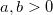
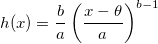
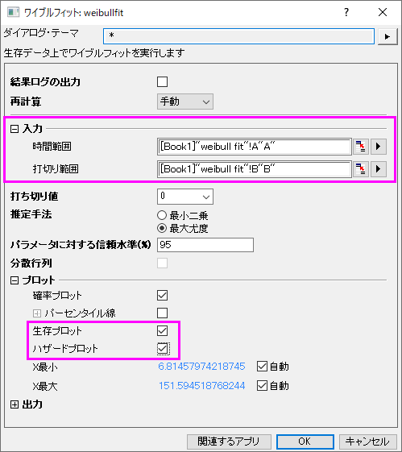
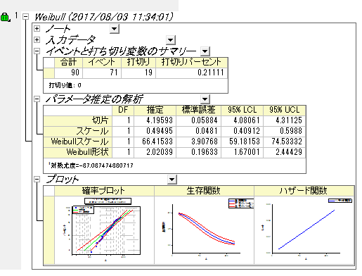
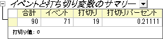
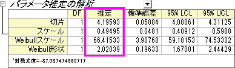
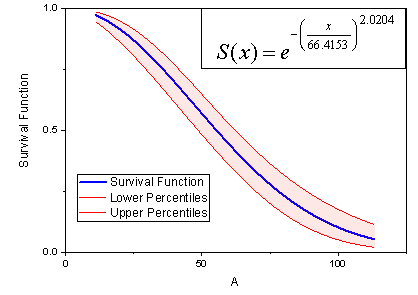

ワイブルフィット
Weibull-Fit
概要
ワイブルフィットは、生存関数と故障時間の関係を解析するためのパラメトリック手法の一種です。解析によって、ワイブル分布のハザード関数と生存関数を決めるパラメータの推定値を得ることができます。
ワイブル分布：
=\frac{b}{a }({\frac{x-\theta }{a }})^{b-1}e^{(-\left({\frac{x-\theta }{a }}\right)^{b})}") ここで、
ここで、

生存関数：
=e^{(-\left({\frac{x-\theta }{a}}\right)^{b})}")
ハザード関数：

ここで、bはｖ、 は尺度パラメータ、
は尺度パラメータ、 は位置パラメータです。Originでは、ワイブルフィットは b と a のみを扱い、 = 0 と仮定します。
は位置パラメータです。Originでは、ワイブルフィットは b と a のみを扱い、 = 0 と仮定します。
b > 1：ハザード関数は増加、b = 1：ハザード関数は一定（指数分布モデル）、b < 1：ハザード関数は減少となります。
必要なOriginのバージョン: OriginPro 9.1 SR0以降
学習する項目
このチュートリアルでは、以下の項目について解説します。
ワイブルフィットを実行
- 空のワークブックを開きます。ヘルプ: フォルダを開く: サンプルフォルダを選択して、サンプルフォルダを開きます。このフォルダ内のStatisticsサブフォルダにあるweibull fit.dat ファイルを探します。空のワークシートにファイルをドラッグアンドドロップしてインポートします。
- 統計：生存分析：ワイブルフィット選択してダイアログを開きます。
- 時間範囲にA(X)列を入力します。同様に、打切り範囲にB(Y）列を入力します。
- 打切り値のドロップダウンリストから打切り値として0を選択します。
- プロットブランチを開き、生存プロットとハザードプロットにチェックを付けます。

- OK ボタンをクリックして、ワイブルフィットを実行します。

結果の解釈
分析レポートのワークシートWeibullFit1を開きます。
- 「イベントと打ち切り変数のサマリー」表から、打切りは19で打切りパーセントは0.2111である事がわかります。

- 「パラメータ推定の解析」の表では、Weibull 分布の全てのパラメータの推定値が以下のように得られます。
切片==4.1959, (は「最小極値分布」の切片であり、 = ln(ワイブルの尺度パラメータ))
ワイブル尺度パラメータ=  =66.4153,
=66.4153,
ワイブル形状パラメータ=c=2.0204,
スケール =0.495 (scale = 1/c)

- c>1なので、時間とともにハザードが増加すると結論付けられます。
- さらに、生存関数とハザード関数を得ることができます。
